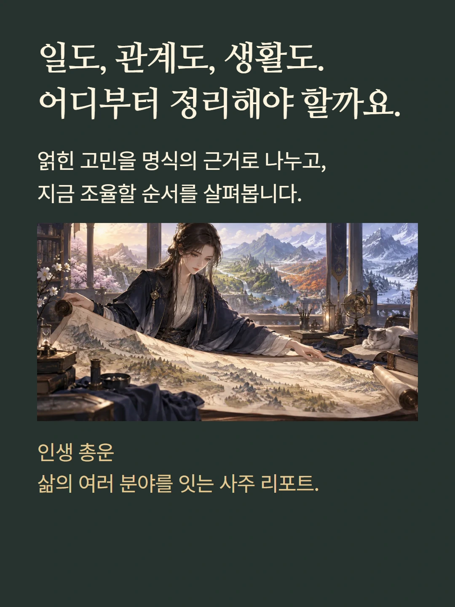
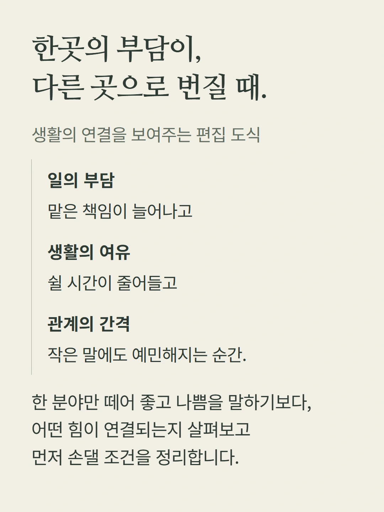
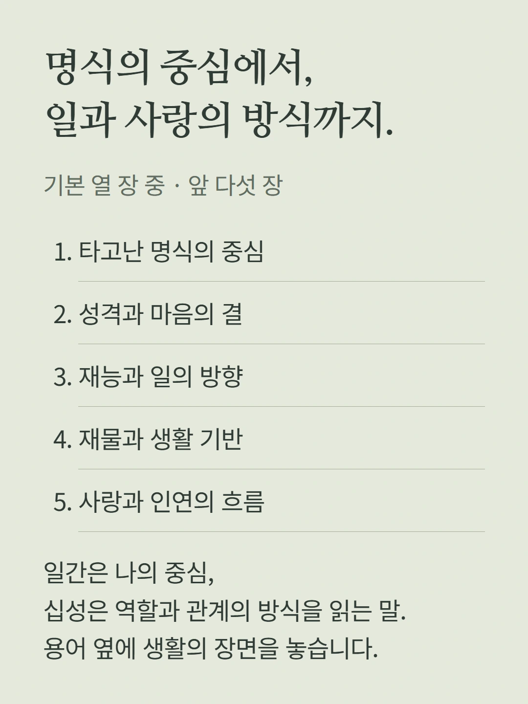
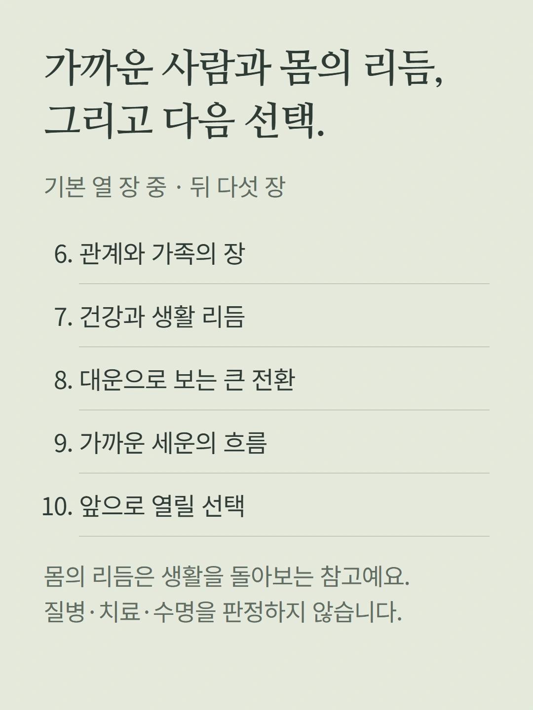
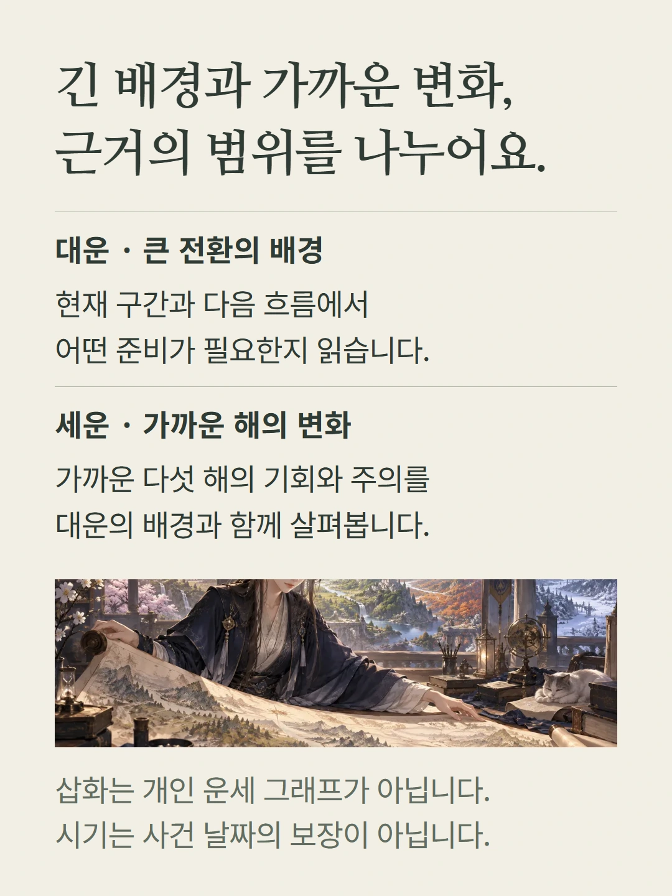
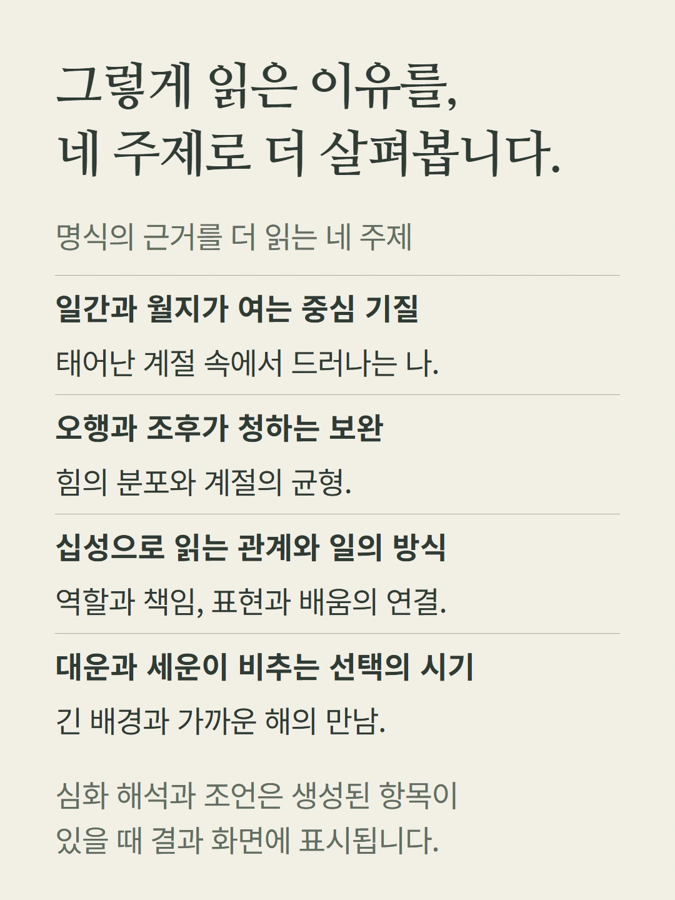
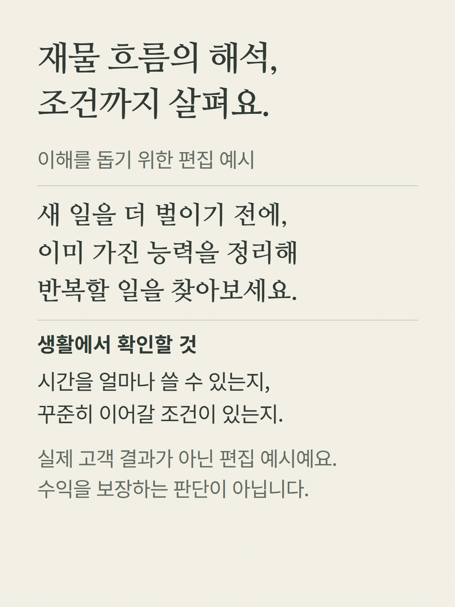
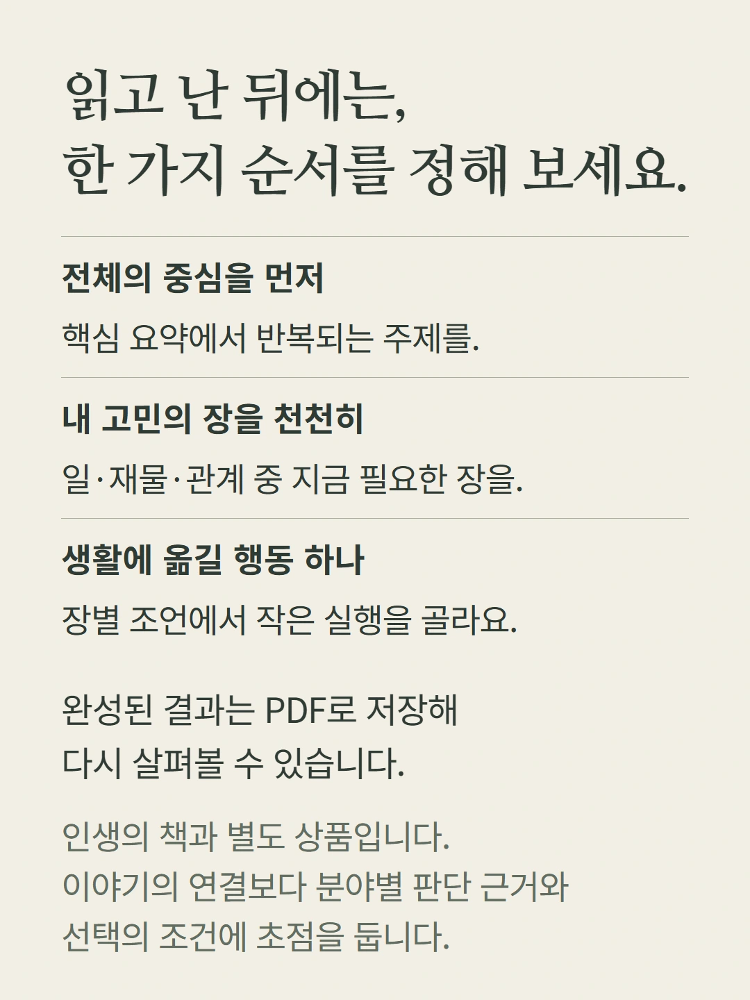
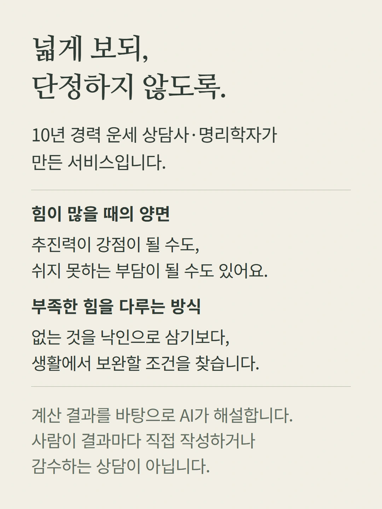
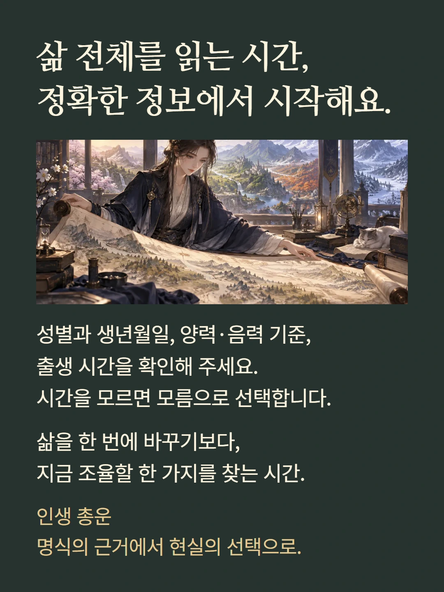

로컬 편집 미리보기. 실제 화면은 mobile.json 및 실제 화면 캡처를 참조하세요.










지도와 서재는 해석의 범위를 표현한 삽화이며 실제 개인 차트가 아닙니다. 아래 상담 문장과 우선순위 도식은 이해를 돕기 위한 편집 예시로 실제 고객 결과가 아닙니다. 요약·조언·심화 해석은 결과에 포함된 경우 표시됩니다. 건강 해석은 의료적 진단이 아니며 성공·수익·관계의 결말을 보장하지 않습니다. 가격은 기존 결제 화면의 현재 값을 확인해 주세요.